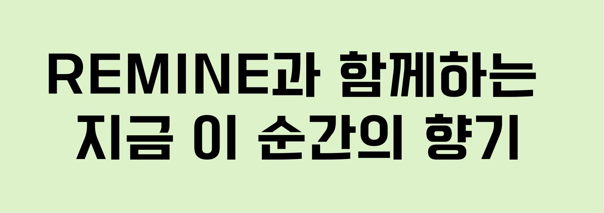
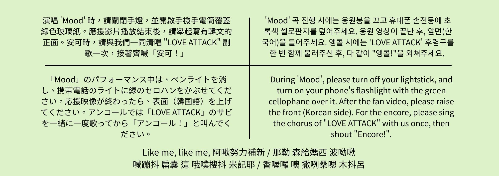

1st FAN-CON in TAIPEI
[RE:MIND]
聯合應援企劃書연합 서포트 기획서
提案單位：REmember제안: REmember
提案日期：2025年9月1日제안일: 2025년 9월 1일
I. 企劃總覽I. 기획 개요
核心概念：以香氣喚醒，以回憶連結핵심 컨셉: 향기로 깨우고, 추억으로 연결하다
本次應援企劃的核心願景，不僅是為 RESCENE 首次台北 FAN-CON 提供支持，更是要將活動打造成一場深刻的、多感官的「普魯斯特效應」體驗。企劃將緊密圍繞 RESCENE 的核心概念——「香氣 (Scent)」與「場景 (Scene)」，並與 FAN-CON 主題「RE:MIND」及粉絲名「REMINE」進行深度連結。我們的目標是將粉絲的愛與支持，轉化為一種獨特、溫暖、專屬於台北的「香氣」，讓 RESCENE 在踏上舞台的每一刻，都能聞到、看到、感受到這份深刻的連結，共同創造一個在未來能不斷被「RE:MIND」的完美場景。 이번 서포트 기획의 핵심 비전은 RESCENE의 첫 타이베이 팬콘을 지원하는 것뿐만 아니라, 행사를 깊이 있고 다감각적인 '프루스트 효과' 체험으로 만드는 것입니다. 기획은 RESCENE의 핵심 컨셉인 '향기(Scent)'와 '장면(Scene)'을 중심으로, 팬콘 주제인 'RE:MIND' 및 팬덤명 'REMINE'과 깊이 연결됩니다. 저희의 목표는 팬들의 사랑과 지지를 독특하고 따뜻하며 타이베이만의 '향기'로 전환하여, RESCENE이 무대에 오르는 모든 순간에 이 깊은 연결을 맡고, 보고, 느끼며, 미래에 계속해서 'RE:MIND'될 수 있는 완벽한 장면을 함께 만드는 것입니다.
II. 現場應援企劃II. 현장 서포트 기획
傳遞我們的話語：單一款全場手幅우리의 메시지 전달: 단일 디자인 전체 슬로건
- 正面文案:앞면 문구: REMINE과 함께하는 지금 이 순간의 향기
(翻譯: 與 REMINE 一同創造的此刻香氣)(번역: REMINE과 함께하는 지금 이 순간의 향기) -
背面文案:뒷면 문구:
1. 手電筒應援 (Flashlight Event)
中 | 演唱 'Mood' 時：請關閉手燈，用手機手電筒照亮此處的綠色玻璃紙。
KOR | 'Mood' 공연 시: 응원봉은 끄고, 핸드폰 손전등으로 이 곳의 초록색 셀로판지를 비춰주세요.
JP | 「Mood」の時：ペンライトをOFFにし、携帯のライトでこの緑のセロハンを照らしてください。
EN | During 'Mood': Turn off lightstick, use phone flashlight to light up the green cellophane here.
2. 手幅應援 (Slogan Event)
中 | 應援影片後：請依影片提示，將手幅正面(韓文)舉至胸前。(以及Talking 及大合照時)
KOR | 응원 영상 후: 영상 안내에 따라 슬로건 앞면(한국어)을 가슴 높이로 들어주세요. (토크 및 단체사진 촬영 시에도)
JP | 応援映像後：映像の指示に従い、スローガン表面(韓国語)を胸の高さまで上げてください。(トーク、記念撮影の際も)
EN | After Fan Video: Follow the video cue to raise the front of the slogan (Korean side) to your chest. (Also for Talk & Photo time)
3. 安可應援 (Encore Event)
中 | 安可時：請先合唱「LOVE ATTACK」副歌，再齊喊「安可！」
【空耳】Like me, like me, 阿啾努力補新 / 那勒 森給媽西 波呦啾 / 喊蹦抖 扁囊 這 哦噗搜抖 米記耶 / 香喔囉 噢 撒咧桑嗯 木抖呂
KOR | 앵콜 시: 'LOVE ATTACK' 후렴을 먼저 떼창한 후, 다같이 "앵콜!"을 외쳐주세요.
JP | アンコール時：「LOVE ATTACK」のサビを合唱してから、「アンコール！」と叫んでください。
EN | For Encore: First, sing the 'LOVE ATTACK' chorus together, then shout "Encore!".
- 預計設計風格:예상 디자인 스타일: 以「綻放的花」或「香水瓶」為視覺元素，採用柔和色系。'피어나는 꽃' 또는 '향수병'을 시각적 요소로 사용하여 부드러운 색감으로 디자인할 예정입니다.
- 預計材質規格:예상 재질 및 규격: 採用霧面不反光相紙，尺寸估計約 45cm x 15cm，避免舞台燈光反射。무대 조명 반사를 피하기 위해 무광 비반사 포토용지를 사용하며, 크기는 약 45cm x 15cm로 예상됩니다.
- 規劃使用時機:사용 시점: 應援影片播放結束後응원 영상 종료 후 (及 Talking、大合照環節)(및 토크, 단체 사진 촬영 시간)
II. 現場應援企劃II. 현장 서포트 기획
手幅應援示意圖슬로건 시안
正面앞면
背面뒷면
II. 現場應援企劃II. 현장 서포트 기획
回憶的香頌：歌曲「Mood」綠色光海추억의 샹송: "Mood" 초록 불빛 바다
為確保所有粉絲都能輕鬆參與並專注於表演，規劃採用經典且效果卓越的玻璃紙燈海應援。綠色呼應專輯 “Dearest“ 中的自然元素，創造一片清新夢幻的氛圍。모든 팬들이 쉽게 참여하고 공연에 집중할 수 있도록, 클래식하면서도 효과가 뛰어난 셀로판지 라이트 오션 서포트를 기획합니다. 초록색은 앨범 "Dearest"의 자연적 요소를 반영하여, 신선하고 몽환적인 분위기를 연출합니다.
- 事前準備:사전 준비: 為方便粉絲參與，綠色玻璃紙將會預先黏貼固定於手幅背面指定區域。팬들의 편의를 위해, 초록색 셀로판지는 슬로건 뒷면 지정된 위치에 미리 부착될 예정입니다.
- 觸發時機:실행 시점: 規劃於演唱會後半段，當唱到「Mood」時，全場粉絲콘서트 후반부, 'Mood' 곡 진행 시 모든 팬들이 統一關閉手燈응원봉을 일제히 끕니다。
- 點亮回憶:추억 밝히기: 關閉手燈同時，開啟手機手電筒，並將手幅背面的綠色玻璃紙對準手機光源，共同創造一片靜謐的「螢光森林」。응원봉을 끈 동시에 휴대폰 손전등을 켜고, 슬로건 뒷면의 초록색 셀로판지를 휴대폰 광원에 맞추어 고요한 '형광 숲'을 함께 만듭니다.
- 優點:장점: 操作最為簡單，視覺效果集中壯觀，粉絲無需分心操作手機，能完全沉浸在音樂與氛圍中。조작이 가장 간단하고 시각적 효과가 집중되어 장관을 이루며, 팬들이 휴대폰 조작에 신경 쓰지 않고 음악과 분위기에 완전히 몰입할 수 있습니다.
* 溫馨提醒：此應援方式經測試不影響粉絲錄影，且透過玻璃紙的光線柔和，不會對成員眼睛造成負擔，敬請安心參與。* 안내: 본 서포트 방식은 테스트 결과 팬들의 영상 촬영에 영향을 주지 않으며, 셀로판지를 통과한 빛은 부드러워 멤버들의 눈에 부담을 주지 않으니 안심하고 참여해 주시기 바랍니다.
II. 現場應援企劃II. 현장 서포트 기획
呼喚我們的香氣：特別安可應援우리의 향기를 부르다: 특별 앵콜 서포트
為創造更具意義的安可環節，規劃由全場共同清唱 RESCENE 的熱門歌曲「LOVE ATTACK」的副歌一次，接著齊聲呼喊安可。더욱 의미 있는 앵콜을 만들기 위해, RESCENE의 인기곡 "LOVE ATTACK"의 후렴구를 다 함께 한 번 떼창한 후, 함께 앵콜을 외치는 것을 기획합니다.
理由:이유: 「LOVE ATTACK」充滿活力與記憶點，副歌旋律朗朗上口，適合全場大合唱，能將活動氣氛推向最高潮，以最熱情的方式呼喚她們重返舞台。"LOVE ATTACK"은 활기차고 기억에 남는 포인트가 많으며, 후렴구 멜로디가 따라 부르기 쉬워 떼창에 적합합니다. 이를 통해 현장 분위기를 최고조로 끌어올리고, 가장 열정적인 방식으로 그녀들을 다시 무대로 불러낼 수 있습니다.
II. 現場應援企劃II. 현장 서포트 기획
影片應援：REMINE 的心意膠卷영상 서포트: REMINE의 마음을 담은 필름
為向 RESCENE 傳達台灣 REMINE 的心意，我們希望能製作一支應援影片於場內播放。經過討論，最終定案內容如下：RESCENE에게 대만 REMINE의 마음을 전하기 위해, 공연장에서 상영할 서포트 영상을 제작하고자 합니다. 논의를 거쳐 최종 결정된 내용은 다음과 같습니다:
最終方案：台灣風景寫真 x 感性告白최종 방안: 대만 풍경 사진 x 감성 고백
本方案將結合視覺與聽覺，傳達最深刻的情感。我們將募集兩種類型的素材：
1. 照片：募集粉絲帶著 RESCENE 小卡、拍立得或手燈，與台灣的特色建築或美麗風景的合照。
2. 音檔：募集粉絲錄製 3-5 秒想對 RESCENE 說的告白或感謝。
最終影片會將粉絲拍攝的台灣風景照片，搭配粉絲的真情告白錄音，並穿插官方影像，製作成一支富含台灣特色與 REMINE 心意的感性影片。본 방안은 시각과 청각을 결합하여 가장 깊은 감동을 전달하고자 합니다. 두 가지 유형의 자료를 모집할 예정입니다:
1. 사진: 팬들이 RESCENE 포토카드, 폴라로이드 또는 응원봉을 들고 대만의 특색 있는 건축물이나 아름다운 풍경과 함께 찍은 사진.
2. 음성 파일: 팬들이 RESCENE에게 하고 싶은 3-5초 분량의 고백 또는 감사 메시지를 녹음한 파일.
최종 영상은 팬들이 촬영한 대만 풍경 사진과 팬들의 진심이 담긴 고백 음성을 결합하고, 공식 영상을 믹스하여 대만의 특색과 REMINE의 마음이 가득 담긴 감성적인 영상으로 제작될 것입니다.
III. 後台應援III. 백스테이지 서포트
規劃方向기획 방향
為向藝人與團隊表達最誠摯的歡迎與感謝，我們希望能準備能代表台灣特色的餐點、零食與伴手禮。詳細品項將在與主辦單位及經紀公司溝通後，依其需求與規定進行最終確認。아티스트와 스태프에게 진심 어린 환영과 감사를 표하기 위해, 대만의 특색을 나타낼 수 있는 음식, 간식, 그리고 선물을 준비하고자 합니다. 상세 품목은 주최 측 및 소속사와 협의 후, 그들의 요구와 규정에 따라 최종 확정될 예정입니다.
餐飲與零食 (工作人員與藝人)음료 및 간식 (스태프 및 아티스트용)
- 手搖飲品:음료: 規劃提供兩種品牌（如：50嵐、一沐日），讓團隊可依喜好選擇。두 가지 브랜드(예: 50嵐, 一沐日)를 제공하여 팀원들이 취향에 따라 선택할 수 있도록 계획 중입니다.
- 台灣特色零食:대만 특색 간식: 準備多樣化的經典零食，如鳳梨酥、義美小泡芙、義美葡萄球巧克力、乖乖等。펑리수, 이메이 미니 퍼프, 이메이 포도알 초콜릿, 乖乖 스낵 등 다양한 클래식 간식을 준비할 예정입니다.
特色獻禮 (藝人)특별 선물 (아티스트용)
另外為藝人準備具代表性的精緻伴手禮，讓她們能帶回韓國品嚐。아티스트를 위해 한국에 돌아가서도 즐길 수 있는 대표적인 고급 선물을 별도로 준비할 예정입니다.
- 糕點類:베이커리류: 佳德鳳梨酥或其他知名糕點。치아더 펑리수 또는 기타 유명 베이커리.
- 餐飲禮盒:요리 선물 세트: 鼎泰豐禮品等。딘타이펑 선물 세트 등.
*所有品項皆為暫定，最終內容會以官方溝通結果為準。*모든 품목은 가안이며, 최종 내용은 공식적인 협의 결과에 따라 결정됩니다.
IV. 募資計畫IV. 펀딩 계획
金額細估與階段式募資예산 상세 및 단계별 펀딩
為確保計畫執行順利並提高資金運用的透明度，我們將募資分為三階段。以場館人數500人為基礎進行初步估算：프로젝트의 원활한 진행과 자금 사용의 투명성을 높이기 위해, 펀딩을 세 단계로 나누어 진행합니다. 공연장 수용 인원 500명을 기준으로 초기 예산을 다음과 같이 추산합니다:
第一階段：核心現場應援 (目標估算：NT$ 6,600)1단계: 핵심 현장 서포트 (목표 예상액: NT$ 6,600)
此階段為必要應援項目，確保所有入場粉絲都能參與。이 단계는 필수 서포트 항목으로, 모든 입장 관객이 참여할 수 있도록 보장합니다.
- 全場手幅 (估算600份) = NT$ 6,000전체 슬로건 (예상 600개) = NT$ 6,000
- 綠色玻璃紙 (數張) = NT$ 100초록색 셀로판지 (여러 장) = NT$ 100
- 行政與雜支 (包裝、交通、預備金等) = NT$ 500행정 및 기타 비용 (포장、 교통、 예비비 등) = NT$ 500
第二階段：後台獻禮 (目標估算：NT$ 4,050)2단계: 백스테이지 선물 (목표 예상액: NT$ 4,050)
第一階段達標後開啟，為藝人與韓方工作人員（約40位）準備台灣特色點心與飲品。1단계 목표 달성 후 시작되며, 아티스트와 한국 스태프(약 40명)를 위한 대만 특색 간식과 음료를 준비합니다.
- 台灣特色零食: NT$ 1,250대만 특색 간식: NT$ 1,250
- 義美小泡芙 x 10包 = NT$ 600이메이 퍼프 x 10봉지 = NT$ 600
- 義美葡萄球巧克力 x 10盒 = NT$ 400이메이 포도알 초콜릿 x 10상자 = NT$ 400
- 乖乖 x 10包 = NT$ 250乖乖 스낵 x 10봉지 = NT$ 250
- 手搖飲品 (40杯 x NT$ 70/杯) = NT$ 2,800버블티 음료 (40잔 x NT$ 70/잔) = NT$ 2,800
第三階段：後台餐飲應援 (目標估算：NT$ 11,000)3단계: 백스테이지 식사 지원 (목표 예상액: NT$ 11,000)
第二階段達標後開啟，旨在提供更完善的支持與感謝。2단계 목표 달성 후 시작되며, 더 완벽한 지원과 감사를 표하기 위함입니다.
- 後台台灣特色餐點 (預算) = NT$ 10,000백스테이지 대만 특색 식사 (예산) = NT$ 10,000
- 追加雜支 (包裝、交通、預備金等) = NT$ 1,000추가 기타 비용 (포장、 교통、 예비비 등) = NT$ 1,000
*所有款項將公開透明，並於活動結束後公布詳細財報。集資若有餘額，將全數以RESCENE名義捐贈予公益團體，或保留至下次專場使用，屆時會再進行公告與投票。*모든 자금 내역은 투명하게 공개되며, 행사 종료 후 상세 정산 보고서를 공지할 예정입니다. 펀딩 후 남은 금액은 전액 RESCENE의 이름으로 공익 단체에 기부하거나, 다음 단독 행사를 위해 이월되며, 이 경우 추후 공지 및 투표를 통해 결정됩니다.
IV. 募資計畫IV. 펀딩 계획
募資回饋方案펀딩 리워드 플랜
初見香氣組
NT$ 126
- 紀念票根 x1
- 應援提袋 x1
- 特製卡套 x1
(成本約 NT$36)
回憶場景組
NT$ 326
- 紀念票根 x1
- 應援提袋 x1
- 特製卡套 x1
- Re:Scene 杯套 x1
(成本約 NT$75)
綻放花途組
NT$ 526
- 紀念票根 x1
- 應援提袋 x1
- 特製卡套 x1
- Re:Scene 杯套 x1
- 花路筆記本 x1
(成本約 NT$164)
永恆RE:member組
NT$ 1026
- 紀念票根 x1
- 應援提袋 x1
- 特製卡套 x1
- Re:Scene 杯套 x1
- 花路筆記本 x1
- REMINE 紀念帽 x1
(成本約 NT$323)
IV. 募資計畫IV. 펀딩 계획
總預算細項 (估算)총 예산 상세 (예상)
第一階段 (總計: NT$ 6,600)1단계 (총액: NT$ 6,600)
- 全場手幅 (600份)전체 슬로건 (600개)NT$ 6,000
- 綠色玻璃紙 (數張)초록색 셀로판지 (여러 장)NT$ 100
- 行政與雜支행정 및 기타 비용NT$ 500
第二階段 (總計: NT$ 4,050)2단계 (총액: NT$ 4,050)
- 台灣特色零食대만 특색 간식NT$ 1,250
- 手搖飲品 (40杯)버블티 음료 (40잔)NT$ 2,800
第三階段 (總計: NT$ 11,000)3단계 (총액: NT$ 11,000)
- 後台台灣特色餐點백스테이지 대만 특색 식사NT$ 10,000
- 追加雜支추가 기타 비용NT$ 1,000
IV. 募資計畫IV. 펀딩 계획
預算總覽 (估算)예산 개요 (예상)
VI. 人力規劃與任務分配VI. 인력 계획 및 업무 분담
核心管理與分工핵심 운영 및 업무 분담
為確保企劃順利推進，團隊已完成初步任務分配，各組負責人與成員如下：프로젝트의 원활한 진행을 위해 팀은 초기 업무 분담을 완료했으며, 각 팀의 책임자와 구성원은 다음과 같습니다:
- 總召 (2人):총괄 (2명): 莫莫、熊熊모모, 슝슝
專案總負責，對内協調各組工作、掌握進度，對外代表團隊溝通。프로젝트 총괄 책임자, 내부적으로 팀 조율 및 진행 상황 관리, 외부적으로 팀 대표하여 소통. - 財務 (1人):재무 (1명): WwwWww
管理募資帳戶、記錄收支、製作財報，確保資金透明。펀딩 계좌 관리, 수입/지출 기록, 재무 보고서 작성 및 자금 투명성 확보. - 公關/宣傳組 (2人):홍보/마케팅팀 (2명): kgy.、璿kgy., 璿
負責社群平台文案撰寫、公告發布、應援教學製作、回覆粉絲問題。소셜 미디어 게시물 작성, 공지 발표, 서포트 가이드 제작 및 팬 문의 응대. - 設計組 (2人):디자인팀 (2명): echo、薰echo, 薰
負責手幅、募資回饋品、宣傳圖文等所有視覺設計。슬로건, 펀딩 리워드, 홍보 이미지 등 모든 시각 디자인 담당. - 影片組 (2人):영상팀 (2명): kgy.、妮妮妮kgy., 妮妮妮
負責應援影片的素材整理、剪輯、配樂與後製。서포트 영상 자료 정리, 편집, 배경 음악 및 후반 작업 담당. - 現場組 (3人):현장팀 (3명): lyh、璿、妮妮妮lyh, 璿, 妮妮妮
活動當天負責應援物分裝、發放、秩序維持及後台應援物遞交。공연 당일 서포트 물품 포장, 배부, 질서 유지 및 백스테이지 물품 전달 담당. - 機動組 (2人):기동팀 (2명): Solo、_iove.tzSolo, _iove.tz
支援各組臨時任務、處理突發狀況，補足團隊臨時人力缺口。각 팀의 임시 업무 지원, 돌발 상황 처리 및 임시 인력 공백 보충. - 翻譯組:번역팀: 招募中모집 중
負責所有對內及對外文件的中韓文翻譯。모든 내부 및 외부 문서의 중-한 번역 담당.
VII. 團隊資訊VII. 팀 정보
- 應援團隊名稱서포트 팀명: REmember - RESCENE [REMIND] 台灣場應援團隊REmember - RESCENE [REMIND] 대만 서포트 팀
- 主要窗口聯繫주요 담당자 연락처: 莫莫 (LINE ID: panchengen1001)모모 (LINE ID: panchengen1001)
- 應援粉絲團連結팬 페이지 링크: Instagram: @rescene_twunion
- 未成年成員說明미성년자 팀원 안내: 本團隊有部分未成年成員，所有未成年成員之家長同意書，將與本企劃書一併附上提交。본 팀에는 일부 미성년자 멤버가 포함되어 있으며, 모든 미성년자 멤버의 법정대리인 동의서는 본 기획서와 함께 첨부하여 제출합니다.
VIII. 執行時程規劃VIII. 실행 일정 계획
2025 年 9 月2025년 9월
企劃書
繳交기획서
제출
入選
公告선정
발표
公布
影片募集영상
모집 공지
集資
開始펀딩
시작
影片截止
手幅提交영상 마감
슬로건 제출
影片
初剪提交영상
1차 제출
階段一：企劃準備與提交 (即日起 - 9/1)1단계: 기획 준비 및 제출 (현재 ~ 9/1)
- (設計組、總召)(디자인팀, 총괄) ~8/31: 完成應援物設計示意圖，並根據最終規劃完成中韓雙語企劃書。~8/31: 서포트 물품 시안 디자인 완료 및 최종 계획에 따라 중문/한글 기획서 완성.
- (總召)(총괄) 9/1: 於截止時間前，將最終企劃書寄至主辦方指定信箱。9/1: 마감 시간 전, 최종 기획서를 주최 측 지정 이메일로 발송.
階段二：9/4 入選後時程2단계: 9/4 선정 후 일정
- (公關/宣傳)(홍보/마케팅) 9/4: 正式發布入選公告。9/4: 선정 공지 정식 발표.
- (公關/宣傳、影片組)(홍보/마케팅, 영상팀) 9/6: 公布影片素材的募集辦法與規格。9/6: 영상 소스 모집 방법 및 규격 공지.
- (公關/宣傳、財務)(홍보/마케팅, 재무) 9/10: 啟動第一階段募資。9/10: 1단계 펀딩 시작.
- (影片組、設計組、總召)(영상팀, 디자인팀, 총괄) 9/12: 影片素材募集截止；手幅最終設計稿提交主辦方審核。9/12: 영상 소스 모집 마감; 슬로건 최종 디자인 시안 주최 측에 검토 요청.
- (影片組、總召)(영상팀, 총괄) 9/17: 影片初剪提交主辦方審核。9/17: 영상 1차 편집본 주최 측에 검토 요청.
後續階段이후 단계
- 活動前 5 天:공연 5일 전: 依照人員需求視情況招募現場小幫手、發布最終提醒。인력 필요에 따라 현장 스태프 모집 및 최종 안내 공지.
- 活動後 3 天:공연 3일 후: 發布後記感謝文。서포트 후기 및 감사 인사 공지.
- 活動後 9 天:공연 9일 후: 公布財務明細。재무 상세 내역 공지.